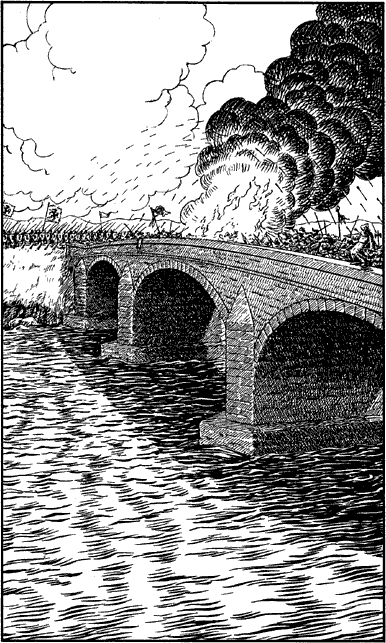

182
A fierce and bloody battle is raging upon the Ghardoz, the formidable stone bridge that joins together the lands of Ruel and Slovia across the River Storn. Its central span is wreathed with smoke and flame, and the approaches are heaped with the dead of both armies.

On the far side of the river, over three hundred yards away, you can see the scarlet battle-banners of Slovia fluttering in the soot-laden air. Regiments of foot soldiers are positioned on the bank, waiting nervously for their orders to assault the bridge. You stare at the fast-flowing waters of the Storn and, after careful thought, you decide to brave the currents and attempt to swim across.
You send your horse away into the forest and then wade into the icy waters. You are only waist-deep in the Storn when the currents catch you and swiftly bear you away downstream, towards the bridge and the battle. You are passing beneath the central span when suddenly a section of the parapet collapses, showering you with rocks and flame.
Pick a number from the Random Number Table. If you have Grand Huntmastery and Assimilance, add 3 to the number you have chosen.
If your total score is 3 or lower, turn to 134.
If it is 4 or higher, turn to 350.